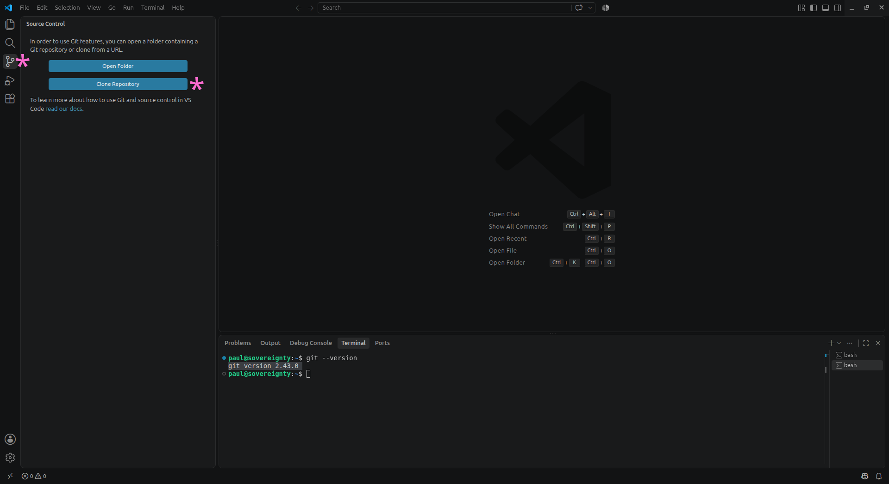
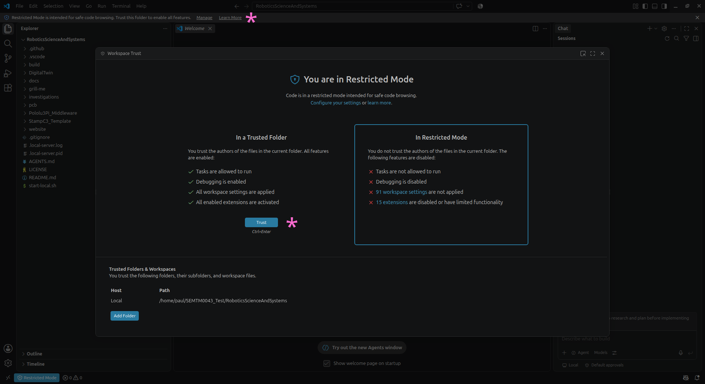
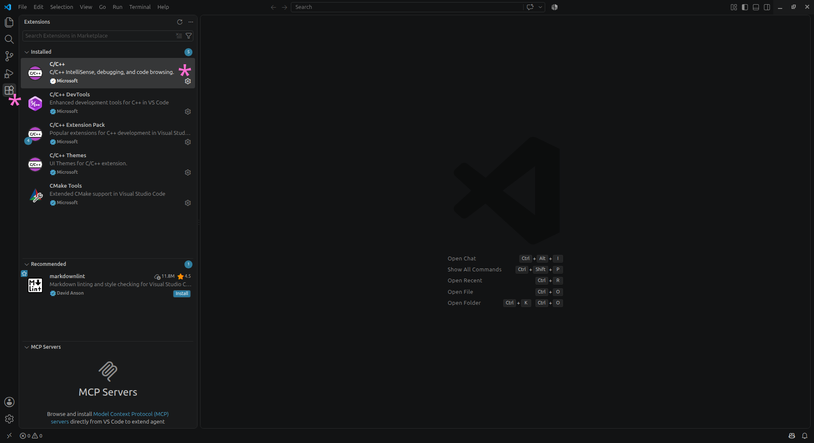
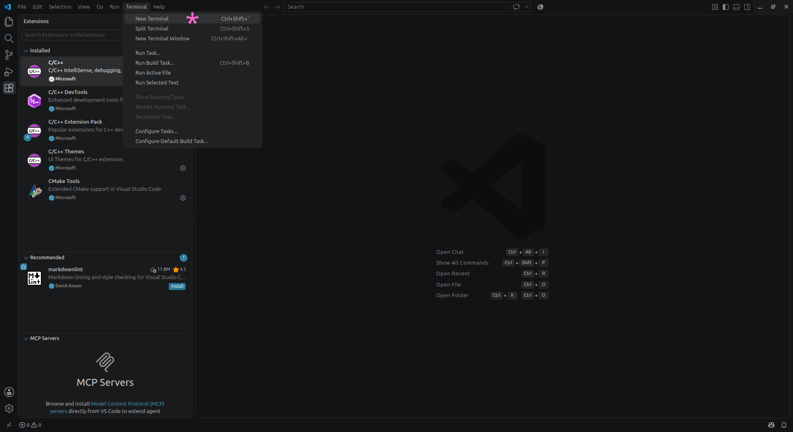

These optional worksheets introduce capabilities beyond the core journey. Use them when they help you explore an idea, extend a system, or develop your own workflow.
+
Not mandatory
Extensions, not extra hurdles
GitHub, Git, VS Code, and Arduino CLI are self-directed extensions. The core route needs only Arduino IDE, Processing, the supplied local workspace, and the robot.
01
Repository workflow
Use GitHub and a local clone
Access
Set up GitHub access
Your team repository can be a shared workspace for code, measurements, analysis, checkpoints, and reports. Create a GitHub account using your university email address, accept the invitation to your pre-populated team repository, then confirm that you can view it in a browser and identify its clone address.
Clone
Clone the team repository
Cloning makes a complete local working copy of the supplied repository. In VS Code, select Source Control → Clone Repository, sign in to GitHub if prompted, choose a location for the workspace, then open the cloned folder and choose Trust. Check that it contains StampC3_Template, DigitalTwin, investigations, and .vscode.


02
Editor and command-line workflow
Configure VS Code, Git, and Arduino CLI
Setup
Install the development tools
Install Visual Studio Code, Git, and Arduino CLI. Install the C/C++ extension from the Extensions view, then confirm git --version and arduino-cli version work in a new terminal.


Tasks
Use the supplied StampC3 tasks
Copy StampC3_Template into the code/ folder for your allocated Phase 1 specialism and rename the folder and matching .ino file together. Run StampC3: Install M5Stack board support, then use the IntelliSense, compile, and compile/upload tasks with the relative path to your copied sketch. The upload and Serial Monitor tasks prompt for the selected serial port.
03
Advanced collaboration
Extend your GitHub and VS Code practice
Advanced
Collaborate deliberately
Practise branches, pull requests, code review, resolving merge conflicts, and small reviewed AI-assisted changes. Keep commits focused, inspect every diff, and link changes to measurements or a testable purpose.
Support
Diagnose common setup failures
Check one layer at a time: Git is installed and the correct repository is open; arduino-cli version runs; M5Stack board support is installed; the sketch folder and .ino filename match; and the selected serial port is correct. Keep the first complete error message before changing anything.
01—03
Planned worksheets
Additional ways to work with the robot
01
Bluetooth
Explore the Bluetooth interface and develop a small, testable interaction with the robot.
02
WiFi
Go further with wireless communication, data exchange, or live observation in a way that supports your own investigation.
03
IR LEDs and transistors
Use the IR LED and transistor hardware on the StampC3 extension board to investigate an additional sensing or actuation capability.
+
Cross-system exploration
Combine sensing, motion, and timing
01
Dot-size estimation
Move a black dot past a surface sensor at a measured speed and time how long its response remains above a stated threshold. Speed × duration estimates the traversal chord across the dot. A centred pass can approximate a diameter; off-centre passes need known offset or multiple traverses to infer a circle. Account for the sensor footprint, which broadens the apparent dot.